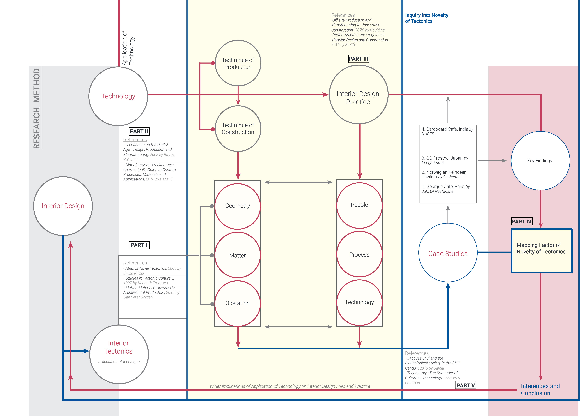
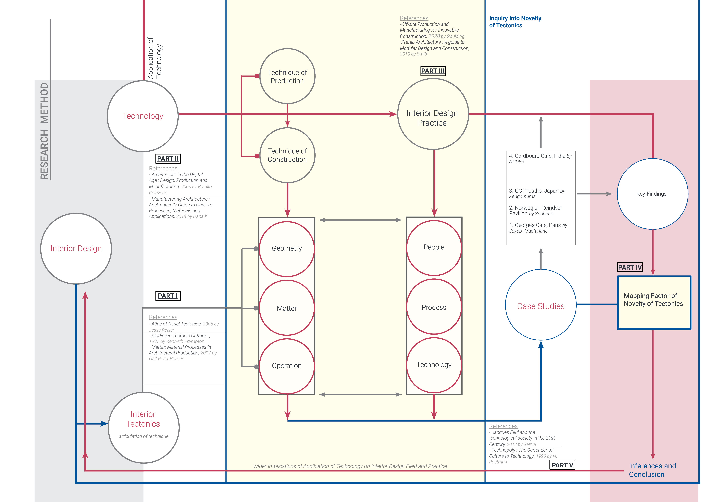

Spatial Perception Technology Metrics
Devising a Quantification Framework for User Perception
Researching and Devising a method framework for analysing User Perception to quantify spatial novelty upon application of Production Technology in spaces
Objectives of Analysis
After understanding these co-relationships in depth and studying repeating patterns in the readings, I could develop:
- A list of end readings that essentially become a quantification method for recording the factor of Novelty in the projects (marked in colors). These, when applied to the framework, generate a second layer of readings that are recorded as numerical values. [Reading I]
- Sub-factors playing the roles of an Active Initiator, and an Active Executor to understand implications for the Design Practice. [Reading II]
The Spatial Tectonic Model
- Geometry: Generation
- Geometry providing function through attributes (Intent)
- Integration of data: structural, loads, production
- Establishing separate interior identity
- Complexity and Application of Control and Adaptability
- Material : Articulation
- Material Association and Input of Attributes to Tectonic
- Material response to geometry
- Exploiting material potential
- Operation : Production
- Evolution of structure from
geometry
- Concept of Production
On-site v/ Off-site
- Collaboration with Production
Facilities
The People-Process-Technology Model
- People:Practice
- Consideration of people/locality
- Input of skilled labour
- Establishing separate interior identity
- Complexity and Application of Control and Adaptability
- Process : Design
- Freedom of design and
geometry
- Communication and Data-Flow
- Design for Spatial Expression
- Technology : Production
- Precision, Accuracy, Quality
- Viability of Production- Design
for Manufacturing
- Adaptation and Integration of
existing technologies
A hierarchal matrix charting method would adopted to develop a framework for application on case studies. As the six main factors were determined earlier, the relevant sub-factors were filtered through multiple literature studies, and by conducting relevant secondary research on design practices and projects.Each inter-relation is charted at the observed intersections, followed by an elaborate note in the thesis as to how X impacts Y and/or Y impacts X.
An end overview of how user perception is becoming affected through the factors considered in the study
 
